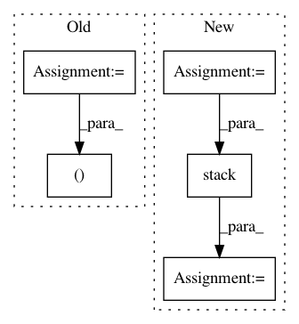

1f9ad444b5dee8b2562b7bfa1cf9f576fa32a347,src/gluonnlp/op.py,,updated_vectors_by_position,#Any#Any#Any#Any#,99
Before Change
// TODO(zheyuye), update when npx.index_update implemented
updates = add_vectors_by_position(F, F.np.zeros_like(base), data, positions)
updates_mask = add_vectors_by_position(F, F.np.zeros_like(base),
F.np.ones_like(positions), positions)
updates = (updates / F.np.maximum(1, updates_mask)).astype(np.int32)
out = F.np.where(updates, updates, base)
updates_mask = F.np.minimum(updates_mask, 1)
return out, updates_mask
@use_np
After Change
The updated result.
Shape (batch_size, seq_length)
positions = positions.astype(np.int32)
// batch_idx.shape = (batch_size, 1) as [[0], [1], [2], ...]
batch_idx = F.np.expand_dims(F.npx.arange_like(positions, axis=0),
axis=1).astype(np.int32)
batch_idx = batch_idx + F.np.zeros_like(positions)
indices = F.np.stack([batch_idx.reshape(-1), positions.reshape(-1)])
out = F.npx.index_update(base, indices, data.reshape(-1))
return out
In pattern: SUPERPATTERN
Frequency: 3
Non-data size: 5
Instances
Project Name: dmlc/gluon-nlp
Commit Name: 1f9ad444b5dee8b2562b7bfa1cf9f576fa32a347
Time: 2020-07-31
Author: 37728728+ZheyuYe@users.noreply.github.com
File Name: src/gluonnlp/op.py
Class Name:
Method Name: updated_vectors_by_position
Project Name: GPflow/GPflow
Commit Name: bd1e9c04b48dd5ccca9619d5eaa2595a358bdb08
Time: 2020-01-31
Author: st--@users.noreply.github.com
File Name: gpflow/kernels/misc.py
Class Name: ArcCosine
Method Name: K_diag
Project Name: GPflow/GPflow
Commit Name: bd1e9c04b48dd5ccca9619d5eaa2595a358bdb08
Time: 2020-01-31
Author: st--@users.noreply.github.com
File Name: gpflow/kernels/statics.py
Class Name: White
Method Name: K